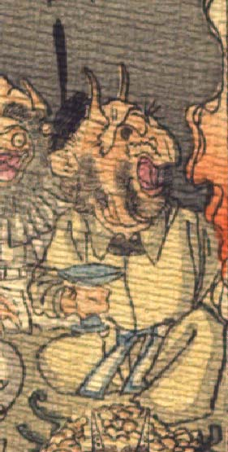

鬼。黒い冠状のものをかぶり、額から長い角を2本生やしている。目玉は黒く、太い鼻は曲がっている。口ひげ、頬ひげを生やしている。黄色い衣服を着て、座り、右手に高台の付いた青い盃を握っている。
著作者：J.Dautremer／出典：親書誌：U426_nichibunken_0123：Le vieillard et les démons／日付：2006／資源識別子：U426_nichibunken_0123_0003_0005
Copyright (c)2010- International Research Center for Japanese Studies, Kyoto, Japan. All rights reserved.